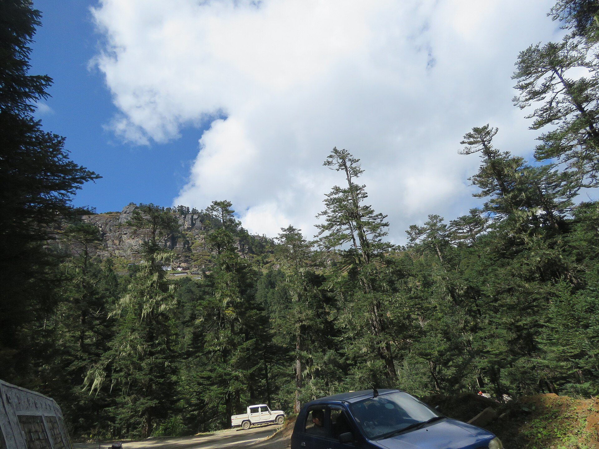
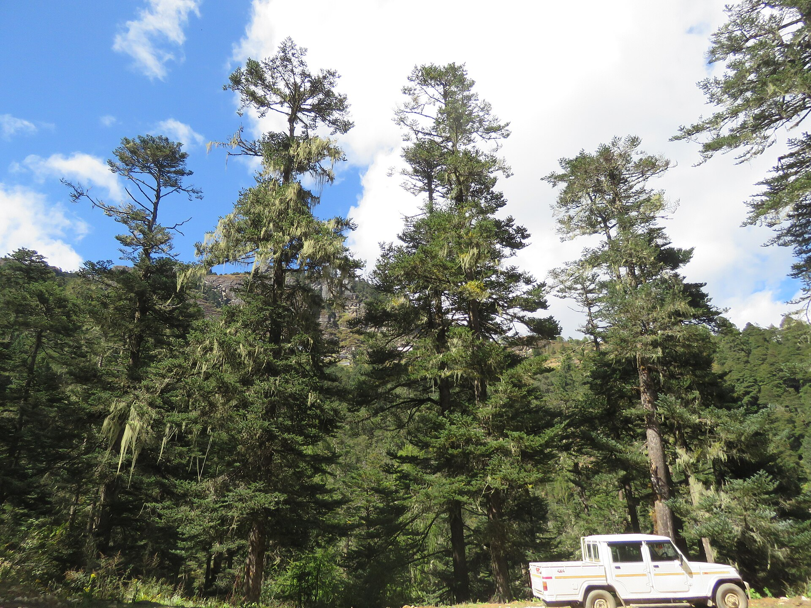
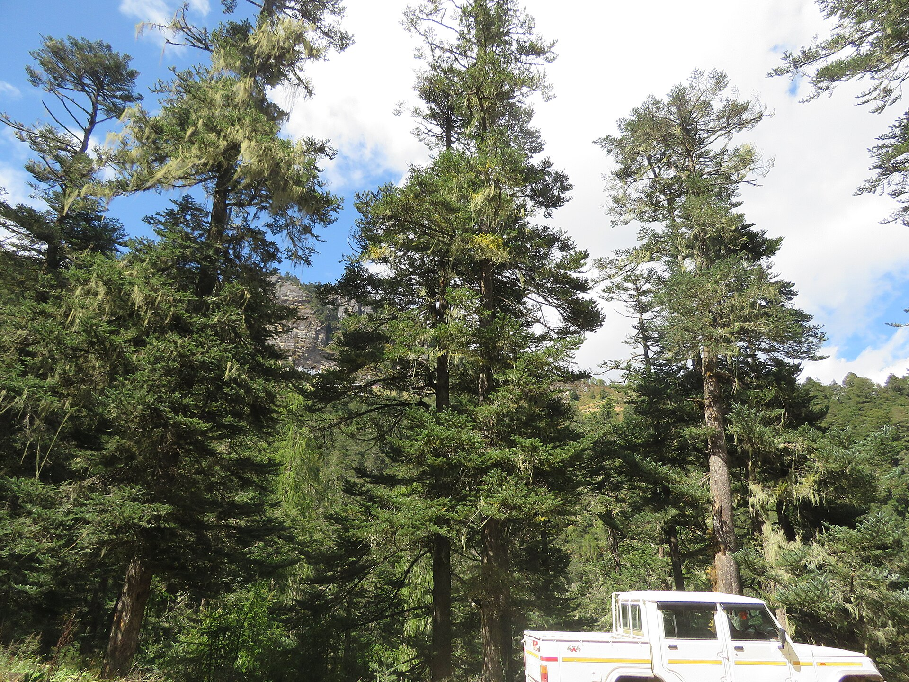
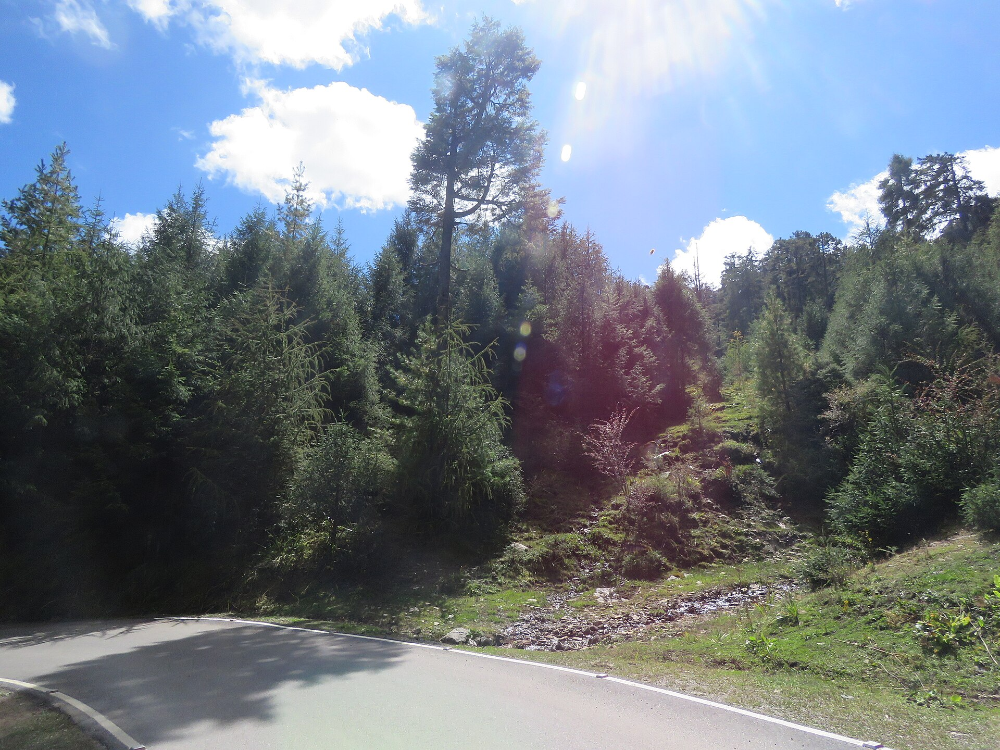

Measurement of
the Crop
Basal area · crop diameter · crop height · crop age · volume of the crop
Royal University of Bhutan
Forest Resources Planning and Management Division
Learning outcomes
Unit VI
Every outcome above is examinable. Outcomes 3–9 will be tested as calculations — full working must be shown, not only the final answer.
Why we measure the crop, not the tree
Unit VI
It is entirely possible to measure an individual tree at one point in time, and to use that measurement for a stated purpose:
If a forest is to be maintained and managed continuously, individually measured parameters cannot be carried forward. Three reasons — each taken in turn on the next slide.
- Gradual diminution of number
- Stand structure
- Object of management
Trees die, are suppressed, and are thinned out while the crop is being measured. The population is not fixed.
A Forest Management Unit holds millions of stems. Crop parameters are estimated from samples, then expanded.
Basal area, growing stock, increment and regeneration status are properties of the collective, not of any one tree.
A crop parameter is almost never the plain average of a tree parameter. It is a weighted quantity — and the weight, nine times out of ten, is basal area.
Three reasons a crop must be measured as a crop
Unit VI
- As a stand matures, stems per unit area fall — through death, decay, suppression, congestion and competition
- Remove the smaller trees and the average height and diameter of the crop rise, though no tree has grown
- Let matured trees die and the average falls, though no tree has shrunk
Change in a crop mean has two parts: real increment, and change in the population being averaged.
Measurement of a crop is complicated by its constitution. Forests and stands differ in many ways:
- Even in regular crops, the representation of age and diameter classes varies from place to place
- A tree's growth depends not only on its own potential but on the size and form of its neighbours
Different forest types need different measurement methods. There is no single universal procedure.
- For an individual tree, the object is to find the rate of growth of that tree
- For a crop, the object is to find the behaviour of the crop — accumulating, stagnating or breaking up
- Crop management needs aggregated data: basal area, growing stock, increment and regeneration status
Different question, different measurements. This is why the methods of calculating crop dimensions must be studied in their own right.
How the unit is organised
Unit VI
What is basal area, why does it beat a stem count, and how is it obtained in the field?
What single diameter fairly represents a crop — and why is it not the average diameter?
How tall is a crop, when its trees range from 8 m to 25 m?
How old is a crop that has no single age, and how much wood does it hold?

Vinayaraj · CC BY-SA 4.0.jpg){kind=link}
Basal Area
Definition · uses · stand density · tree and stand basal area · enumeration, point sampling and the spacing factor
What basal area is
Unit VI
Basal area is the area occupied by the cross-section of a tree trunk — and, for a crop, the sum of those cross-sections per unit of ground area.
- The cross-section is taken at breast height — 1.37 m under Bhutan’s Second NFI protocol, 1.30 m in many international manuals. Record which
- For one tree it is an area; for a stand it is a density — an area per hectare
- It combines both how many trees there are and how big they are, in a single figure
- It is measured, not estimated: DBH is the only field measurement required
a property of one stem
a property of an area of forest
Writing m2 when the answer is a stand figure. If the question says per hectare, the unit must say per hectare.

Four uses of basal area
Unit VI
- Indicates how crowded a stand is, by measuring stem cross-sectional area per hectare
- A higher basal area usually means a denser stand — more wood per unit area
- More informative than a stem count because it reflects both tree size and tree number
- Basal area is strongly correlated with timber volume
- Combined with mean height and a form factor it gives total stand volume
- Change in basal area over time reflects stand growth
- Periodic re-measurement shows whether a forest is accumulating biomass, stagnating or declining
- Especially useful in growth and yield studies — and it needs only diameters, so it is cheaper and more reliable than measuring volume increment
- Guides silvicultural decisions — thinning, harvesting and regeneration
- Foresters set basal area targets, for example 18–25 m2/ha retained after thinning in pine
- Helps balance timber production against wildlife habitat and carbon storage
V = G × h × f is the sentence that joins Unit V to Unit VI. The form factor f came from Unit V; the basal area G comes from Section A; the height h comes from Section C.
Two ways to express stand density
Unit VI
Why do we need basal area and not simply the number of trees?
Fast, cheap and needs no instrument — you only have to count. It is a genuine measure of crowding.
Needs a diameter on every tree — slower and dearer, but it carries information a count cannot.
The number of trees in a given area is stand density, and it is the crowding.
It takes no account of the sizes of the trees. Basal area does — which is why prescriptions are written in m2/ha.
Same basal area, very different stands
Unit VI

Roughly a nine-fold difference in stem number, and no difference at all in basal area stocking.
Basal area goes with d2. Double the diameter and one tree does the work of four — the fact behind every result in this unit.
Worked example 1 · Number density
Unit VI
In 5 systematically chosen sample plots of chir pine forest at CNR, each of 100 m2, the numbers of trees were:
Calculate the number of trees per hectare.
Area in ha = m2 ÷ 10 000
A shorter route: 78 trees in 5 × 100 = 500 m2 = 0.05 ha, so 78 ÷ 0.05 = 1 560 trees/ha. Same answer, fewer steps.
An answer of 15 600 or 156 means the plot area conversion went wrong by a factor of ten — almost always dividing by 100 instead of by 0.01.
Tree basal area and stand basal area
Unit VI
Simply the area of a circle. A stem is not truly circular, so a tape-derived diameter runs slightly high — a small, systematic, universally accepted bias.
A density, not an area. The stand area belongs in the denominator, and it must be in hectares.
Measure every DBH in a plot, or in the whole stand, and add up
Count qualifying trees through an angle gauge — no plot boundary needed
Infer stocking from the spacing between stems relative to their size
Basal area of a tree = m2 · Basal area of a stand = m2 per hectare
Centimetres, metres and the constant 0.00007854
Unit VI
Diameters are recorded in centimetres. Basal area is wanted in square metres. Most wrong answers begin there.
g = π d2 / 4
Two steps, no constant to remember.
One step. The constant is π/4 ÷ 10 000.
Carry at least six significant figures through every intermediate step; round only the final answer.
| DBH | Basal area of one tree |
|---|---|
| 10 cm | 0.007854 m2 |
| 20 cm | 0.031416 m2 |
| 30 cm | 0.070686 m2 |
| 40 cm | 0.125664 m2 |
| 50 cm | 0.196350 m2 |
| 100 cm | 0.785398 m2 |
Double the diameter and the basal area quadruples. 10 → 20 cm multiplies it by 4; 10 → 100 cm multiplies it by 100.
Worked example 2 · Stand basal area from a plot
Unit VI
In a sample plot of 100 m2 there were five trees with the following DBH:
Find the total basal area and the stand basal area per hectare.
| DBH cm | d in m | g = π d2/4 (m2) |
|---|---|---|
| 25 | 0.25 | 0.049087 |
| 30 | 0.30 | 0.070686 |
| 50 | 0.50 | 0.196350 |
| 35 | 0.35 | 0.096211 |
| 40 | 0.40 | 0.125664 |
| Σ g | 0.537998 | |
The single 50 cm tree contributes 0.196 m2 — over a third of the plot total. Had it stood just outside the boundary the answer would be 34.2 m2/ha, a 36 % swing from one stem.
Small plots give unstable basal area estimates, and the instability comes from the big trees. Take several plots and average — or use point sampling, which weights big trees by design.
Stand basal area by summing tree basal areas
Unit VI
- No sampling error at all — the figure is the stand
- Expensive, slow, and only justified by high value or by research
- Used before major felling operations and in permanent research plots
- What every forest inventory actually does
- Carries a sampling error that must be reported alongside the estimate
- Precision improves with more plots, not with bigger plots
Circular plots have the shortest boundary for a given area, so the fewest borderline decisions. Square and rectangular plots are easier to lay out with tapes.
Small plots in dense pole crops, larger plots in mature forest. The plot must hold enough trees to be stable — roughly 15 to 30 stems.
A tree is in if the centre of its stem at breast height falls inside the boundary — not the bark, not the crown.
Point sampling — basal area without a plot
Unit VI
Stand at a point. Sweep a full circle through a gauge of fixed angle. Count every stem that looks wider than the gauge. Multiply. That is the basal area per hectare.
A tree qualifies only if it is closer to the point than a limiting distance proportional to its diameter. So every tree carries its own circular plot, and that plot grows with d2 — exactly as basal area does. The two effects cancel, so every counted tree contributes the same basal area per hectare, whatever its size.
Walter Bitterlich, 1948. Also called angle count sampling, plotless cruising or variable radius plot sampling — all the same method.

| BAF | Count in a stand of 30 m2/ha | Verdict |
|---|---|---|
| 1 | 30 trees | slow |
| 2 | 15 trees | comfortable |
| 4 | 7.5 trees | imprecise |
Worked example 3 · Point sampling
Unit VI
A crew works eight sampling points on a systematic grid with a gauge of BAF 2 m2/ha per tree. The angle counts were:
| P1 | P2 | P3 | P4 | P5 | P6 | P7 | P8 |
|---|---|---|---|---|---|---|---|
| 12 | 15 | 11 | 14 | 13 | 16 | 12 | 15 |
Estimate the stand basal area per hectare.
By Method 1 the same estimate would have required a diameter on every tree in every plot — perhaps 150 measurements, each recorded and later squared. Here the crew recorded eight integers.
- It gives basal area per hectare directly, but not stems per hectare and not the diameter distribution — unless diameters are also taken
- It is sensitive to the observer: borderline judgements, trees hidden behind nearer trees, and drifting off the point while sweeping
Wrongly include one borderline tree at every point: the mean rises to 14.5 and the estimate to 29.0 m2/ha — a 7.4 % error from one consistent misjudgement. Point sampling trades measurement effort for observer discipline.
The spacing factor method
Unit VI
The spacing factor F is the average distance between trees, divided by the mean diameter — both in the same units.
Stand basal area depends on the spacing factor alone. Mean diameter cancels out. Two stands with the same relative spacing carry the same basal area whether the trees are poles or veterans.
| Spacing factor F | G = 7 854 / F2 | Condition |
|---|---|---|
| 14 | 40.1 m2/ha | very dense |
| 16 | 30.7 m2/ha | dense |
| 18 | 24.2 m2/ha | well stocked |
| 22 | 16.2 m2/ha | open |
| 25 | 12.6 m2/ha | heavily thinned |
Worked example 4 · Spacing factor
Unit VI
In a chir pine stand the average distance between stems is paced at 4.5 m and the mean DBH is 25 cm.
Estimate the stand basal area per hectare.
F sits in the denominator squared. A pace that is 5 % short reports a spacing 5 % short and a basal area about 10 % high. Errors in spacing are magnified.
A district forester can pace the spacing, take three or four diameters, and have a basal area figure in five minutes without laying out a plot. Not accurate enough for a sale; entirely adequate for deciding whether a stand needs thinning this year or next.
The three methods compared
Unit VI
| Enumeration | Point sampling | Spacing factor | |
|---|---|---|---|
| Field measurement | DBH of every tree in the plot | An angle count — no measurement at all | Mean spacing and a few diameters |
| Formula | G = Σg ÷ area (ha) | G = N × BAF | G = 7 854 ÷ F2 |
| Also gives you | Stems/ha, diameter distribution, volume data | Basal area only, unless diameters are also taken | Nothing else |
| Accuracy | Highest | Good, if the observer is disciplined | Rough — a reconnaissance figure |
| Cost per estimate | High | Low | Very low |
| Main weakness | Time and money; borderline trees at the plot edge | Observer bias — borderline calls and hidden trees | Assumes regular spacing; errors in s are magnified |
| Use it for | Timber sales, research plots, high-value stands | Forest inventory and growing stock assessment | Walk-through thinning decisions |
Choose the method by what the number is for. A forester who uses one method for every purpose is either wasting money or producing figures that will not stand up.
Precision improves with the number of sampling units, roughly as its square root — four times as many plots halves the standard error. Many small units beat few large ones.
Review questions · Basal area
Unit VI

Vinayaraj · CC BY-SA 4.0.jpg){kind=link}
Diameter of
the Crop
Mean basal area · crop diameter · mean diameter · why the two differ · top diameter and the 250 biggest stems
Crop diameter comes from mean basal area
Unit VI
Crop diameter is based on the mean basal area — not on the mean of the diameters alone.
The diameter corresponding to the mean basal area of a uniform and generally pure crop.
The diameter corresponding to the mean basal area of a group of trees or a stand. A general term, used for any stand structure.
Crop diameter and mean diameter are determined by exactly the same arithmetic. The name changes with the nature of the stand, not the calculation.
The crop diameter exists to feed V = G × h × f. The representative diameter must be the one that reproduces the crop's average basal area — any other gives the wrong volume.
Method · from diameter classes to crop diameter
Unit VI
The diameters of the trees are measured and classified by diameter classes. The class mark — the midpoint — represents every tree in the class. Intervals of 5, 7 or 10 cm are usual.
The number of trees in each class is multiplied by the basal area corresponding to the middle of that class — not by the average of the individual basal areas.
The basal areas of all diameter classes are totalled and divided by the total number of trees, giving the mean basal area. The crop diameter follows from it.
| n1, n2… | number of trees in each diameter class |
| s1, s2… | basal area of the mean tree — the class mark — of each class |
A weighted average of basal areas, with the class counts as the weights. Every step in Section B is an application of that one sentence.
Using the class mark instead of the individual diameters introduces a small approximation. It is standard, accepted practice, and the error falls as the class interval narrows.
The field data · five plots, six diameter classes
Unit VI
| Diameter class (cm) | Class mark (cm) | Plot 1 | Plot 2 | Plot 3 | Plot 4 | Plot 5 | Total |
|---|---|---|---|---|---|---|---|
| 7 – 13 | 10 | 12 | 14 | 11 | 13 | 12 | 62 |
| 14 – 20 | 17 | 9 | 8 | 11 | 11 | 10 | 49 |
| 21 – 27 | 24 | 5 | 5 | 6 | 6 | 6 | 28 |
| 28 – 34 | 31 | 5 | 6 | 5 | 4 | 5 | 25 |
| 35 – 41 | 38 | 3 | 2 | 2 | 3 | 3 | 13 |
| 42 – 48 | 45 | 1 | 2 | 2 | 1 | 2 | 8 |
| Total | 35 | 37 | 37 | 38 | 38 | 185 | |
Many small stems, few large ones — the reverse-J of an uneven-aged selection forest, and the shape most Bhutanese broadleaf forest takes. An even-aged plantation would give a bell instead.
- Mean diameter of the crop
- Crop diameter
- Stand basal area per hectare
Worked example 5 · the computation table
Unit VI
| Diameter class | Class mark d (cm) | d (m) | g = π d2/4 (m2) | Trees n | Class basal area n·g (m2) | n·d (m) |
|---|---|---|---|---|---|---|
| 7 – 13 | 10 | 0.10 | 0.007854 | 62 | 0.486947 | 6.20 |
| 14 – 20 | 17 | 0.17 | 0.022698 | 49 | 1.112202 | 8.33 |
| 21 – 27 | 24 | 0.24 | 0.045239 | 28 | 1.266690 | 6.72 |
| 28 – 34 | 31 | 0.31 | 0.075477 | 25 | 1.886919 | 7.75 |
| 35 – 41 | 38 | 0.38 | 0.113411 | 13 | 1.474349 | 4.94 |
| 42 – 48 | 45 | 0.45 | 0.159043 | 8 | 1.272345 | 3.60 |
| Total | 185 | 7.499452 | 37.54 | |||
7.4995 m2 over 0.25 ha = 30.0 m2/ha. A plausible, well-stocked figure — the arithmetic is on track.
It serves only the arithmetic mean diameter, needed for the comparison at the end. It plays no part in the crop diameter.
Six decimal places on every g. Round to five and the class totals drift in the third decimal — visible, though not enough to change the answer.
Worked example 5 · the two answers, and why they differ
Unit VI
Neither is wrong — they answer different questions. But only the crop diameter reproduces the crop's basal area, so only the crop diameter may enter a volume calculation.
The crop diameter is always the larger
Unit VI
Squaring gives a large tree far more influence than averaging diameters does. That is why the crop diameter always exceeds the arithmetic mean — except when every tree is identical.
The quadratic mean of a set of positive numbers is always ≥ their arithmetic mean, with equality only when all are identical.
The gap between the two means measures the diameter variability of a stand. A uniform plantation has a small gap; a ragged uneven-aged natural forest has a large one.
Mean diameter as an arithmetic average
Unit VI
- A mean diameter calculated as the arithmetic average of diameters cannot be the crop diameter
- The mean diameter obtained through the mean basal area is always bigger than the one obtained by directly averaging diameters
- It describes the size of the typical tree — which drives harvesting cost, product mix and machinery choice
- Its gap from the crop diameter is a free diagnostic of stand variability
Answers: how big is a typical tree?
Answers: what single diameter reproduces the crop's basal area?
Answers: how big are the biggest trees? — next slide
Many textbooks and field manuals write mean diameter without saying which one they mean. When reading a figure, check the definition. When writing one, state it.
Top diameter · the 250 biggest per hectare
Unit VI
Top diameter is the diameter corresponding to the mean basal area of the biggest trees in a uniform, generally pure crop — taking the 250 biggest diameters per hectare.
by basal area, of the 250 thickest trees per hectare
Thinning from below removes small and intermediate stems; the biggest 250 per hectare are largely untouched. A figure built on them stays stable through thinning — which is exactly what site quality assessment requires.
250 per hectare — so the number taken from a sample depends on the sample area. From 0.25 ha you take the biggest 62.5 trees, not 250.
Worked example 6 · top diameter
Unit VI
Taking the biggest 250 trees from the sample rather than 250 per hectare. Here that would take all 185 trees, and the top diameter would collapse onto the crop diameter — because the quota would then include every tree in the stand.
| Arithmetic mean D̄ | 20.29 cm |
| Crop diameter Dg | 22.72 cm |
| Top diameter | 33.11 cm |
One set of field measurements. Three different questions. Be able to say which question each number answers.
- D̄ — how big is a typical tree?
- Dg — what diameter reproduces the crop's basal area?
- Top — how big are the dominants, and therefore how good is the site?
Review questions · Diameter of the crop
Unit VI

Vinayaraj · CC BY-SA 4.0.jpg){kind=link}
Height of
the Crop
Crop height and Lorey's formula · the height–diameter curve · mean height · top height and site quality
Crop height · Lorey's formula
Unit VI
The height of a crop is determined in two forms. The first is the crop height — the average height of a regular crop, as given by Lorey's formula.
| s1, s2… | the total basal area of each diameter class — the n·g column |
| h1, h2… | the mean height of the trees in that diameter class |
It is a basal-area weighted mean height. Big trees count for more, in exact proportion to the wood they carry.
A stand's volume is dominated by its large trees, so its representative height must be too. The plain average of heights lets a 10 cm sapling count as much as a 45 cm veteran.
Will Lorey's height come out above or below the plain arithmetic mean height? Decide now, then turn the page.
Worked example 7 · Lorey's crop height
Unit VI
| Diameter class | Trees n | Class basal area s (m2) | Mean height h (m) | s · h |
|---|---|---|---|---|
| 7 – 13 | 62 | 0.486947 | 9.0 | 4.3825 |
| 14 – 20 | 49 | 1.112202 | 13.5 | 15.0147 |
| 21 – 27 | 28 | 1.266690 | 17.0 | 21.5337 |
| 28 – 34 | 25 | 1.886919 | 19.5 | 36.7949 |
| 35 – 41 | 13 | 1.474349 | 21.5 | 31.6985 |
| 42 – 48 | 8 | 1.272345 | 23.0 | 29.2639 |
| Total | 7.499452 | — | 138.6882 | |
Three fifths of the trees sit in the two smallest classes — but those classes hold only 21 % of the basal area. Counting trees gives small stems overwhelming influence; counting basal area does not.
Use 14.31 m in V = G × h × f and the crop volume is understated by 22.6 % of the correct figure — (18.49 − 14.31) ÷ 18.49. On a 50 ha coupe that is not a rounding error.
The prediction on the previous slide was right: Lorey's height is above the arithmetic mean, and it always will be when the tall trees are also the thick ones.
Mean height · read from the height–diameter curve
Unit VI
Mean height is the height corresponding to the mean diameter of a group of trees, or to the crop diameter of a stand.
Mean or crop height is used for determining the volume of a crop. Every step of Sections B and C exists to feed that one calculation.
Measuring a height takes five to ten times as long as measuring a diameter, and on steep or dense ground it may be impossible. So a crew measures diameters on every tree, heights on a sample of 30–50 spread across the diameter range, fits a curve, and predicts the rest.
The curve turns cheap measurements into expensive ones.
Why not simply average the sample heights? Because the sample is chosen to cover the diameter range evenly, not in proportion to the stand — so its plain average represents nothing. The curve is what lets an unrepresentative sample give a representative answer.
Draw it smooth and let it pass between the points, not through them. A curve that visits every point is fitting the measurement error, not the stand.
One curve, two readings
Unit VI
Height growth slows and stops long before diameter growth does. An old dominant keeps laying on rings for decades after reaching its maximum height — so at the right-hand end, diameter rises with almost no gain in height.
Misreading the diameter costs far less at the large end. Read 40 cm for 45 and the height shifts by tenths of a metre; read 5 cm for 10 and it shifts by several.
Spread is normal — suppressed and dominant trees of one diameter differ in height. Be alarmed only by patterned scatter: the stand is not homogeneous and should be stratified.
Every curve is species and site specific. One fitted to blue pine at Lobesa does not apply at Bumthang, still less to a broadleaf mix.
Top height and site quality
Unit VI
Top height is the height corresponding to the mean diameter — calculated from basal area — of the 250 biggest diameters per hectare, as read from the height–diameter curve.
- Crop height and mean height relate to all the trees of the crop
- Top height relates to only the 250 biggest diameters of the crop
Site quality is judged by how tall a stand grows by a given age. Base it on mean height and a forester could improve a site by thinning. Base it on the biggest 250 per hectare and it is nearly immune to thinning from below — because a site quality figure must describe the site, not the silviculture.
What happens if the stand is thinned from above, removing dominants? Top height falls and site assessment is compromised — one reason crown thinning is uncommon in even-aged management.
Which height, when
Unit VI
| Arithmetic mean height | Mean height | Crop height (Lorey's) | Top height | |
|---|---|---|---|---|
| How it is obtained | Plain average of all measured heights | Read from the H–D curve at the crop diameter | Σ(s·h) ÷ Σs | Read from the H–D curve at the top diameter |
| Weighted by | Nothing — every tree counts equally | Nothing, but read at a basal-area mean diameter | Basal area | Only the 250 biggest per ha |
| Trees involved | All | All | All | The dominants only |
| On the worked dataset | 14.31 m | ≈ 16.4 m | 18.49 m | ≈ 20.1 m |
| Effect of thinning from below | Rises sharply | Rises | Rises a little | Almost unchanged |
| Use it for | Description only — never for volume | Volume of the crop | Volume of the crop, where structure is irregular | Site quality and yield tables |
The more a definition favours big trees, the taller the answer. That single rule generates the whole ordering: arithmetic < mean < Lorey < top.
Traditions differ. Dominant height and top height are sometimes the same thing and sometimes not — some use the 100 largest per hectare, not 250. Find the definition before using the number.
Review questions · Height of the crop
Unit VI

Vinayaraj · CC BY-SA 4.0.jpg){kind=link}
Age and Volume
of the Crop
Even-aged crop age · five formulae for the uneven-aged crop · volume from local volume tables and sample plot expansion
Age of an even-aged crop
Unit VI
Different methods are used for even-aged and uneven-aged crops. For an even-aged crop the age is also called the crop age, and there are two situations.
- Age determined by ring counting — the direct method, on an increment core or a stump
- Or read from an age–diameter curve — built and read exactly like the height–diameter curve of Section C
Trees are grouped into age classes, and the crop age is the basal-area weighted mean of the class ages.
That is Lorey's formula with age in place of height. The same weighting principle applied to a different variable — recognising it saves memorising four separate formulae.
Annual rings are clear in temperate conifers such as blue pine and spruce. Many subtropical broadleaves in the southern foothills form indistinct or false rings, so ring counting there is unreliable.
Mean age of an uneven-aged crop
Unit VI
| Method | Formula | Weight used | Notes | |
|---|---|---|---|---|
| i | Smalian & Heyer | Σ V ÷ Σ ( V / a ) | Volume | Most accurate — but cumbersome, since the volume of every age group is required |
| ii | Based on basal area | ( S1a1 + S2a2 + … ) ÷ S | Basal area | Simple and easy — valid provided the form height of the diameter classes is equal |
| iii | Andre's formula | ( n1a1 + n2a2 + … ) ÷ ( n1 + n2 + … ) | Number of trees | Less dependable — a sapling counts as much as a veteran |
| iv | Gumpel's formula | ( m1a1 + m2a2 + … ) ÷ ( m1 + m2 + … ) | Area occupied | For age classes occupying distinct areas — the practical choice for a mapped plantation estate |
| v | Simple mean of samples | ( a1 + a2 + … ) ÷ n | None | Easiest, least dependable. Improves only if the sample trees are truly representative and numerous |
Every one is the same weighted mean. Only the weight changes: volume, basal area, tree number, area — or nothing at all.
Rank the weights by how well each proxies for volume and you have the accuracy order, top to bottom, exactly as listed.
Worked example 8 · one forest, five mean ages
Unit VI
| Group | Age a (yr) | Basal area S (m2) | Trees n | Area m (ha) | Volume V (m3) |
|---|---|---|---|---|---|
| I | 25 | 8 | 520 | 12 | 90 |
| II | 55 | 14 | 260 | 20 | 310 |
| III | 90 | 6 | 60 | 8 | 200 |
| Total | — | 28 | 840 | 40 | 600 |
The youngest group holds 520 of the 840 trees but only 8 of the 28 m2 of basal area. Weighting by number drags the answer towards the young group — the failure mode of the previous slide, now visible as a number.
The defensible choices are the basal area formula, or Gumpel's where the age classes are mapped as separate compartments. Whichever is used, the plan must state which.
None of the five is right. Each is the correct answer to a slightly different question. A mean age quoted without its method is not a usable number.
Determination of the volume of a crop
Unit VI
Direct measurement of the volume of a whole stand is neither practical nor economical. Volume is built up from parts — a sample, a table, and an expansion.
The crop in a small area — the sample — is enumerated and classified by diameter classes. The same field work as Section A.
The number of trees in each class is multiplied by the volume corresponding to that class, read from the local volume table.
The sum over all classes is the volume V of the crop in the sample area X. Expand it to the whole forest.
Read volume per tree straight from the table by diameter class. No height or form factor needed — they are built into the table. This is what a field forester does. Bhutan uses local volume equations.
Compute V = G × h × f — basal area from Section A, crop height from Section C, form factor from Unit V. This is what an examination asks for when no table is given.
Worked example 9 · expanding a sample plot volume
Unit VI
- Sample plot area = 0.1 ha
- Volume of all trees in the sample plot = 5 m3
- Total forest area = 50 ha
Find the total volume of the forest.
50 m3/ha × 50 ha — the hectares cancel, leaving cubic metres. A total is m3; only the intermediate figure is per hectare. Catching this kind of slip in other people's work is a professional skill.
50 m3/ha is low. A mature Bhutanese conifer stand may hold 200–400. So this is a young, degraded or open stand — or the plot was not representative.
It is one plot. One plot cannot represent the spatial variability of 50 ha, and — decisively — it gives no design-based variance, so the estimate cannot be quoted with a standard error or a confidence interval at all.
Note what the weakness is not. The sampling fraction here is 0.2 %, and a small fraction is not by itself evidence of poor precision. Precision depends on the number of plots, how they are distributed, how variable the population is, the design, the plot size, the estimator, measurement quality and spatial autocorrelation. A national inventory covering 0.01 % of the country can be far more precise than this.
From volume to biomass
Unit VI
| Class | n | BA m2 | kg / tree | kg |
|---|---|---|---|---|
| 15 cm | 5 | 0.0177 | 46.1 | 230.5 |
| 25 cm | 4 | 0.0491 | 154.2 | 616.7 |
| 40 cm | 2 | 0.1257 | 494.7 | 989.4 |
| 60 cm | 1 | 0.2827 | 1 656.9 | 1 656.9 |
| Total | 12 | 0.819 | — | 3 493.5 |
The crop chain of this unit works because its steps are linear: a mean basal area gives a crop diameter, and G × h × f gives volume. Biomass will not do that. The equation is a cubic in basal area, so the biomass of the mean tree, multiplied by the number of trees, is not the biomass of the stand.
34.9 t/ha
27.1 t/ha — 22 % low
The mean tree of this plot is 29.5 cm and weighs 226 kg. Twelve of them do not add up to the plot, because the one 60 cm tree carries almost half the biomass on its own.
You may take an average before applying a linear function. You may never take an average before applying a curved one. This is why an inventory records individual trees and not class totals.
Two for each of fourteen species, plus a general conifer and a general broadleaf — one on basal area alone, one on basal area and height, exactly as in Unit V. Biomass in kilograms. The figures here use the general conifer equation, B = −12.3 + 3299·BA + 52756·g(BA). Beyond the examinable chain of this unit, but what this same plot data is asked to produce in every carbon and REDD+ report the country files. UWICER & FRMD 2018
Two routes to biomass — and how to choose
Unit VI
- Use it when you already hold a volume figure and no tree list — an old inventory, a volume table, a timber return
- The cost: three uncertainties stacked — volume error, a density that is usually a species or regional average, and an expansion factor that is usually a national default
- Use it when you hold tree measurements — which, after Unit II and Unit IV, you always do
- The cost: only the equation's own error — but you must have an equation fitted to something close to your species and size range
- This is the route the National Forest Inventory and every Bhutanese carbon report uses
- equation source and year
- species the equation was fitted to
- input variables and their units
- calibration range (n, min and max DBH)
- output unit
- why this equation and not another
The structure of the Bhutan biomass equations
Unit VI
( )+ means cube it only if the bracket is positive, otherwise zero. t1, t2, t3 are the published knots — the 10th, 50th and 90th percentiles of the predictor in the fitting data. They differ between the BA form and the BAH form of the same species.
| Equation set | n | DBH range |
|---|---|---|
| Pinus wallichiana | 52 | 2.6 – 95.8 cm |
| Picea spinulosa | 48 | 5.6 – 87 cm |
| Abies densa | 55 | 5 – 82 cm |
| Quercus lanata | 34 | 3.3 – 77.5 cm |
| General conifer | 357 | 2.6 – 95.8 cm |
| General broadleaf | 199 | 3.3 – 89 cm |
14 species · 2 general · two forms each — DBH alone, and DBH with height
Omitting the spline term because it looks like a correction
Mixing centimetres and metres, or cm2 and m2, in the predictor
Using a tree outside the fitted DBH range without saying so
Taking a general equation when a species equation exists
Assuming equation error disappears on aggregation
Positive and negative random errors may partly offset in a sufficiently large sample. Shared model bias, site effects, species differences, measurement bias and extrapolation error do not offset — they survive summation intact and scale with the estimate.
From tree biomass to stand biomass and carbon
Unit VI
The biomass-to-carbon fraction is set by the reporting protocol, and it differs between protocols and between carbon pools. The examinable skill is finding and citing the applicable fraction — not reciting a number.
| Source | Where it comes from | More plots? |
|---|---|---|
| Sampling | plots stand in for the whole forest | shrinks |
| Equation | the allometric model itself | no change |
| Measurement | instruments, crew, protocol drift | no change |
Only the first of the three improves when you lay out more plots. That is the single most useful thing to know about a carbon estimate.
One plot cannot carry a national figure. It gives no estimate of how variable the forest is, and therefore no defensible variance — which is why the sampling design of the next section matters as much as the equation.
Three blue pine, two equations
Unit VI
Estimate the biomass of each tree twice — once from the Pinus wallichiana DBH-only equation, once from the DBH-and-height equation. Then answer the question underneath.
| Tree | DBH (cm) | Height (m) | BA (m2) | BAH (m3) |
|---|---|---|---|---|
| A | 25.0 | 16.0 | 0.049087 | 0.78540 |
| B | 25.0 | 22.0 | 0.049087 | 1.07992 |
| C | 45.0 | 26.0 | 0.159043 | 4.13513 |
knots 0.00309 0.098407 0.394911
B = 0.63608 + 195.88699·BAH − 0.6393·X2
knots 0.02457 2.424196 14.68175
Fitted on 52 trees, 2.6–95.8 cm DBH — all three trees are inside it. Biomass in kilograms.
Two trees of the same DBH but different heights hold different amounts of wood. An equation that cannot see height cannot tell them apart — so it is right on average and wrong on every individual. Decide, and be able to defend, which of those two failures matters for the job in front of you.
The sampling frame, and the designs that draw from it
Unit VI
what you want to describe — all forest in the FMU
what your frame can actually reach
They are never identical. Every exclusion — an out-of-date boundary, a cliff, a restricted area, a plot nobody could get to — moves the second away from the first. That gap is where bias lives, and it does not show up anywhere in the arithmetic.
- the forest boundary used, and its source and date
- what is excluded — and on what rule
- what will be done about inaccessible plots
- whether the frame is known to be incomplete
Every location equally likely. The reference case for the mathematics — and expensive to walk.
A grid. Spreads plots evenly and is easy to navigate to. Bhutan's NFI uses a 4 × 4 km grid.
Split the forest into types first, sample each. Buys precision when the strata really do differ.
Several plots at each visited location. What you do when travel dominates cost — as in Bhutan, three plots per cluster.
Fixed-area plots take every tree inside a boundary. Variable-radius plots take a tree with probability proportional to its basal area. Either can sit on any of the four designs.
Permanent plots are re-measured; temporary plots are not. Only permanent plots can give increment — everything in Unit VII depends on them existing.
The Second NFI: a 4 × 4 km national grid, three plots of 12.62 m radius per cluster, trees from 10 cm DBH, saplings 5 to under 10 cm, data captured electronically, estimates published with 95 % confidence intervals.
Variance, standard error and the confidence interval
Unit VI
| Plot | Plot volume (m3) | × EF 20 → m3/ha | (x − x̄) | (x − x̄)2 |
|---|---|---|---|---|
| 1 | 8.2 | 164 | −36 | 1 296 |
| 2 | 11.6 | 232 | +32 | 1 024 |
| 3 | 6.9 | 138 | −62 | 3 844 |
| 4 | 13.4 | 268 | +68 | 4 624 |
| 5 | 9.9 | 198 | −2 | 4 |
| Total | 50.0 | 1 000 | — | 10 792 |
- It is wide. The honest statement about this stand is a range, not the number 200
- Divide by n − 1, not n — the mean was estimated from the same data
- SE falls with the square root of n. Four times the plots halves it. That one sentence governs every inventory budget ever written
Seven plots of 0.05 ha in a 50 ha forest is a sampling fraction of 0.7 %. What buys precision is the number of plots set against the variability of the forest — not the fraction of the area covered.
Measurement error is the error in reading one tree, and it is reduced by calibration, training and protocol. Sampling error is the error from having measured plots instead of the whole forest, and it is reduced by more plots. A defensible report accounts for both — and, after the biomass slides, for model error as well.
Inaccessible plots, non-response and quality control
Unit VI
- Record it — coordinates, date, and the reason it could not be measured
- Replace only under a written rule agreed before fieldwork, and record that a replacement was used
- Never walk on and measure the nearest convenient stand instead
Steep, remote and cliff-bound ground is not a random subset of the forest. Systematically dropping it biases every estimate the inventory produces — in a direction that cannot be recovered afterwards.
- Calibrate tapes, callipers and clinometers at the start of each season
- Repeat measurements on a sample of trees, blind
- State the tolerance a repeat must fall within
- Species-code checks against the agreed list
- Coordinate checks — is the plot where it should be?
- Range checks on every field before analysis
- Duplicate-tree prevention in permanent plots
- Field-team consistency — the same rules across crews
- Supervisor re-measurement of a proportion of plots
- Data validation before any analysis begins
A DBH of 400 cm is a typing error. A height of 3 m against a 60 cm stem is a transposition. Neither is visible once the data are summed.
Every departure from the written method — a shifted measurement height, a different instrument, a plot moved — is recorded at the time, not reconstructed later.
“Your data give 200 m3/ha. Who checked it, when, against what tolerance, and where is that recorded?”
A documented gap can be adjusted for. An undocumented substitution cannot. Write down what you did, including what you failed to do.
Sources of error and quality control
Unit VI
- Reading a tape to the nearest centimetre rather than the millimetre
- Genuine variation between sample plots
- Occasional transcription slips, if they are as often high as low
- Scatter about the height–diameter curve
Fixed by measuring more. Four times as many plots halves the standard error.
- A stretched or worn girth tape — reads high on every tree
- Measuring breast height downhill on slopes — high on every tree
- Generous borderline tree decisions — every plot biased upward
- A form factor borrowed from another species or site
- Using the arithmetic mean diameter where the crop diameter is required
Not fixed by measuring more. Twice as many trees with a stretched tape gives a more precise wrong answer.
habits
Calibrate tapes at the start of every field season · re-measure a sample of plots blind and compare · check that totals reconcile · record the conventions used, in the field book, at the time.
Crop measurement in Bhutanese forest management
Unit VI
Every figure in this unit ends up in a document somebody has to defend. Name the document, and the arithmetic stops being abstract.
Basal area and growing stock per hectare set the allowable cut in an FMU working plan and in a community-forest management plan.
Biomass per hectare, from the 2018 national equations, feeds the greenhouse-gas inventory and Bhutan's carbon-neutrality commitment.
Growing stock and forest condition are published in the State of Forest Report and in Bhutan's international submissions.
Diameter-class distribution, top height and site quality decide silvicultural treatment — thinning, regeneration felling, or leaving well alone.
- Prepare and revise the community-forest management plan
- Estimate the group's own timber, fuelwood and pole requirement, and what the forest can sustainably supply
- Monitor regeneration and the condition of the stand between revisions
- Identify culturally important species and assess NWFP resources
- Combine members' local ecological knowledge with plot measurement — and support transparent, equitable allocation within the group
Not one of these is volume, and every one of them is measured with the instruments of this module. Volume is one output of mensuration, not its purpose.
The unit on one page
Unit VI
g = π d2 / 4
= 0.00007854 D2
Dg = √( 4 s̄ / π )
always > D̄
Lorey's formula
s = class total BA
Lorey's formula with
age in place of h
Back to the sentence from slide 3: a crop parameter is a weighted quantity, and the weight is almost always basal area. It is true of the crop diameter, of the crop height, and of the crop age.
Questions for assessment and practice
Unit VI
Practical, preparation and further reading
Unit VI
- Lay out sample plots of a stated size and enumerate every tree by DBH
- Compute stand basal area, crop diameter and stems per hectare from your own data
- Measure heights on a sample and fit a height–diameter curve by hand
- Read the mean height at your crop diameter and compute the crop volume
Plot work is done in teams. Arriving unprepared wastes the session for everyone in your group.
The Unit V notes are needed because the form factor comes from there, and the volume calculation cannot be completed without it.
Record your conventions at the time: plot centre, plot radius, uphill measurement, borderline decisions. A field book that does not say how the measurements were taken is worth very little.
- The module reading list, on the sections covering stand density, basal area and stand parameters
- Any standard forest mensuration text, on Lorey's height and quadratic mean diameter
- The current National Forest Inventory field manual, for the plot design used in Bhutan
- UWICER and FRMD, DoFPS (2018). Allometric Biomass Equations — the equations behind slide 48
- Mercker, D. and Yang, S.-I. A Simple Guide to Common Forest Measurements, UT Extension W 1117 — a short parallel treatment of basal area, stems per unit area and fixed- and variable-radius plots, in imperial units
Bring a question about a calculation only with your own attempt attached.
Case study · the plot becomes a hectare
Everything Units II and IV measured, expanded from 500 m2 to the hectare — expansion factor 20.
stems/ha
m2/ha
m
m3/ha
The crop diameter is always the larger, because squaring gives the big stems more weight than counting them does.
× 20 → 141.9 Mg/ha
Computed for every stem and summed — never from the mean tree, because the equation is curved.
These are good figures for this plot. With one plot there is no variance, so none of them can honestly carry a confidence interval.
Notation, units and terminology
Unit VI
| Symbol | Quantity | Unit |
|---|---|---|
| d | diameter of one tree | cm |
| C | circumference or girth | cm |
| g | basal area, one tree | m2 |
| G | basal area, stand | m2/ha |
| h | height of one tree | m |
| HL | Lorey’s mean height | m |
| v | volume, one tree | m3 |
| V | volume, stand | m3/ha |
| t | bark thickness, one side | cm |
| B | double bark, B = 2t | cm |
| f | form factor | — |
Upper case is the stand.
That one rule resolves most of the confusion in the literature: g is the tree in front of you, G is the hectare it stands in. Likewise v and V.
Dub = Dob − 2t
Gub = Gob − 2πt
A diameter crosses bark twice. Subtract 2t, never t.
Crown-base height ground to the base of the live crown · crown length H − crown-base height · crown midpoint height ground to the crown midpoint · live-crown ratio crown length ÷ H. The bare term “crown height” is not used — three incompatible meanings.
relascope · calliper · Smythies’ hypsometer · chir pine · breast height · over bark / under bark · merchantable height · bole height
DBH reference height is protocol-dependent. Bhutan’s Second NFI used 1.37 m; many international manuals use 1.30 m. Follow the applicable protocol and record the height used.

Measurement of
the Crop
Readings · the supplementary folder
Practical sheets and dates · the VLE
Senior Forestry Officer
Adjunct Lecturer
Forest Resources Planning and Management Division
Royal University of Bhutan
Test your understanding
Unit VI · Paper
The unit paper: full marks, time allowed and pass mark are printed on the sheet. Sign in, answer, submit once. Open the paper in its own tab